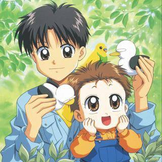
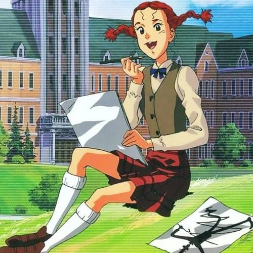
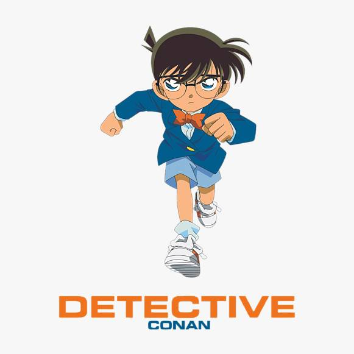
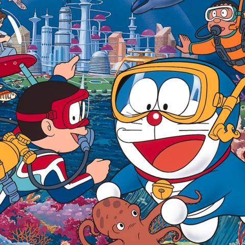
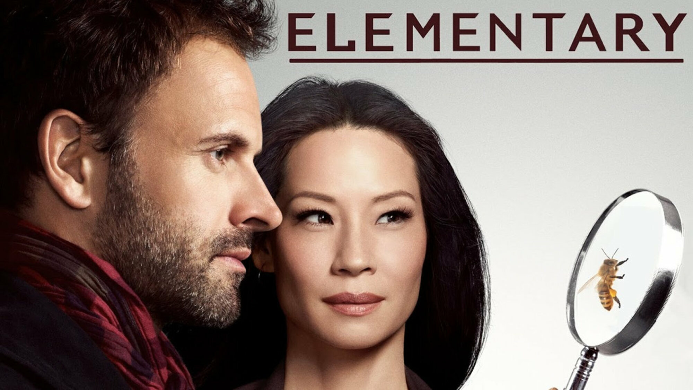
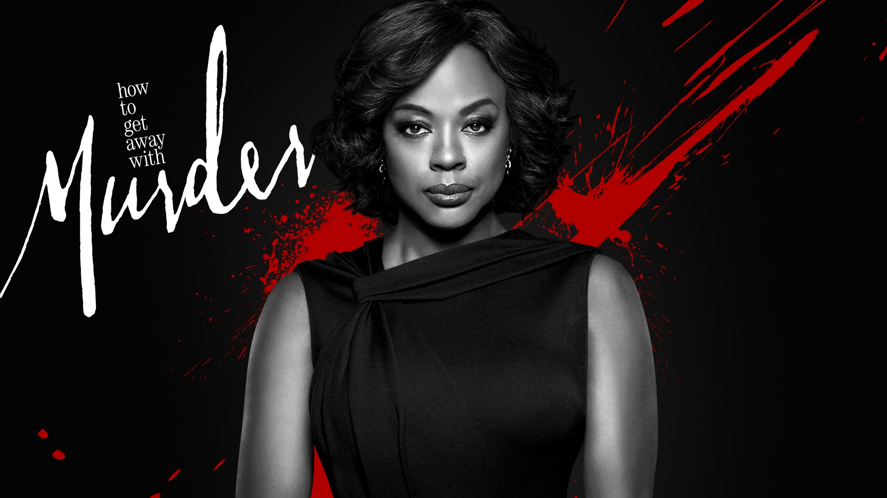

Christina Fayad
I'm a 28 Year-old Mechatronics Engineer.
Programming was always my passion.
I started with Micro-Processors,
then moved on to Desktop Apps,
& now shifting towards Web Development.
For the last 5 years, Entrepreneurship
also became part of my passion.
However, today I'm presenting a key
childhood anime plus series from my
teenager and adult years that I believe it
helped to shape me in one way or another.
I'm a 28 Year-old Mechatronics Engineer. Programming was always my passion. I started with Micro-Processors, then moved on to Desktop Apps, & now shifting towards Web Development. For the last 5 years, Entrepreneurship also became part of my passion. However, today I'm presenting a key childhood anime plus series from my teenager and adult years that I believe it helped to shape me in one way or another.

Aka-chan to boku
After his mother's death, 11-year-old Takuya is forced to undertake the enormous task of raising his baby brother Minoru while their father toils away at work to provide for them.
Animaniacs
The zany adventures of a trio of 1930s animated characters in the modern world.
Sindbad
A brave young boy from Iraq fights evil forces and evil to save the day !
Captain Tsubasa
Tsubasa Oozora is an 11-year-old elementary school student who is deeply in love with football and dreams of one day winning the FIFA World Cup for Japan.

Daddy Long-Legs
It's an anime series based on the original novel of "Daddy Long Legs" written by Jean Webster. It takes you through the high school life of Judy Abbot and her mysterious benefactor called Jhon Smith.

Detective Conan
The cases of a detective whose physical age was chemically reversed to that of a prepubescent boy but must hide his true mental development.

Dodge Danpei
A 10 years old red-haired kid want be like his father and become in the best dodge ball player of all the times.

Doraemon
Doraemon is a robotic cat that comes from the 22nd century. He comes to 20th century and stays with Nobi Family. The Nobis love Doraemon very much. So Doraemon always help the Nobis with the devices from 22nd century.

read more the UFO Robot Grendizer, a powerful war machine, and makes it to Earth.
read more after the only wordsthat come out of its mouth, Muka Muka.



